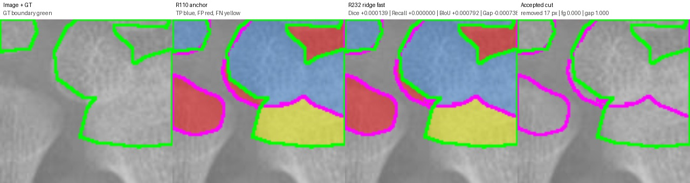
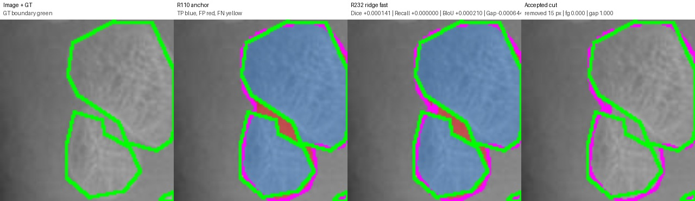
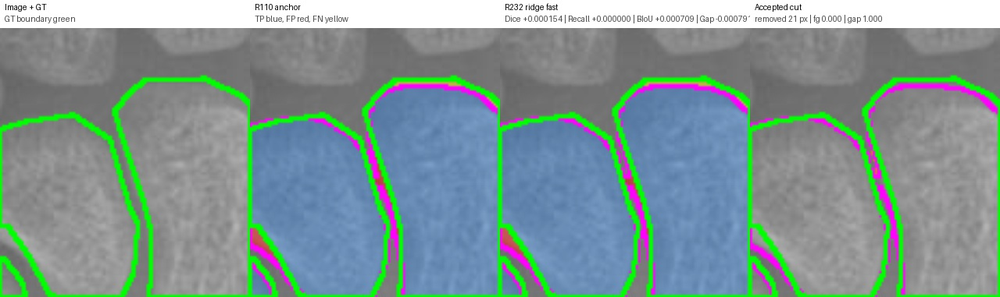

Legend: GT boundary green, prediction boundary magenta, TP blue tint, FP red, FN yellow. Accepted cuts: orange if true gap/background, red if GT foreground.
cut=17.0 px, Dice +0.000139, Recall +0.000000, BIoU +0.000792, gapFP -0.000738

{
"anchor_boundary_f1": "0.4076344385622736",
"anchor_boundary_iou": "0.25599300087489063",
"anchor_component_count_mae": "1.0",
"anchor_component_delta_mean": "1.0",
"anchor_dice": "0.8741845467526529",
"anchor_gap_region_fp_rate": "0.1957871878393051",
"anchor_iou": "0.7764900936748735",
"anchor_precision": "0.8566516068848201",
"anchor_recall": "0.8924501695948779",
"cut_pixels": "17.0",
"delta_boundary_f1": "0.001003589149853934",
"delta_boundary_iou": "0.0007920893988426214",
"delta_component_count_mae": "0.0",
"delta_component_delta_mean": "0.0",
"delta_dice": "0.00013871800484255292",
"delta_gap_region_fp_rate": "-0.000738327904451691",
"delta_iou": "0.00021891823265240973",
"delta_precision": "0.0002664594964145728",
"delta_recall": "0.0",
"edited": "1.0",
"image": "11852.png",
"num_accepted_cuts": "1.0",
"r232_boundary_f1": "0.40863802771212754",
"r232_boundary_iou": "0.25678509027373325",
"r232_component_count_mae": "1.0",
"r232_component_delta_mean": "1.0",
"r232_dice": "0.8743232647574954",
"r232_gap_region_fp_rate": "0.1950488599348534",
"r232_iou": "0.776709011907526",
"r232_precision": "0.8569180663812347",
"r232_recall": "0.8924501695948779"
}
cut=15.0 px, Dice +0.000141, Recall +0.000000, BIoU +0.000210, gapFP -0.000644

{
"anchor_boundary_f1": "0.456278079924332",
"anchor_boundary_iou": "0.2955701243796336",
"anchor_component_count_mae": "1.0",
"anchor_component_delta_mean": "-1.0",
"anchor_dice": "0.9247154768425537",
"anchor_gap_region_fp_rate": "0.1056701030927835",
"anchor_iou": "0.8599728322390763",
"anchor_precision": "0.9487355604121136",
"anchor_recall": "0.9018816406481867",
"cut_pixels": "15.0",
"delta_boundary_f1": "0.00024981585590022615",
"delta_boundary_iou": "0.00020969213412785903",
"delta_component_count_mae": "0.0",
"delta_component_delta_mean": "0.0",
"delta_dice": "0.00014071818438121664",
"delta_gap_region_fp_rate": "-0.0006443298969072142",
"delta_iou": "0.00024343906251467207",
"delta_precision": "0.0002962946784548226",
"delta_recall": "0.0",
"edited": "1.0",
"image": "13480.png",
"num_accepted_cuts": "1.0",
"r232_boundary_f1": "0.45652789578023223",
"r232_boundary_iou": "0.29577981651376145",
"r232_component_count_mae": "1.0",
"r232_component_delta_mean": "-1.0",
"r232_dice": "0.924856195026935",
"r232_gap_region_fp_rate": "0.10502577319587629",
"r232_iou": "0.860216271301591",
"r232_precision": "0.9490318550905684",
"r232_recall": "0.9018816406481867"
}
cut=21.0 px, Dice +0.000154, Recall +0.000000, BIoU +0.000709, gapFP -0.000791

{
"anchor_boundary_f1": "0.44864",
"anchor_boundary_iou": "0.2891914191419142",
"anchor_component_count_mae": "2.0",
"anchor_component_delta_mean": "-2.0",
"anchor_dice": "0.937545553578846",
"anchor_gap_region_fp_rate": "0.19222218035196142",
"anchor_iou": "0.8824336485549474",
"anchor_precision": "0.9203286558345642",
"anchor_recall": "0.9554188962542928",
"cut_pixels": "21.0",
"delta_boundary_f1": "0.000852121890746238",
"delta_boundary_iou": "0.0007085086410219543",
"delta_component_count_mae": "0.0",
"delta_component_delta_mean": "0.0",
"delta_dice": "0.00015432727648734268",
"delta_gap_region_fp_rate": "-0.0007913479293062686",
"delta_iou": "0.0002734734308262876",
"delta_precision": "0.000297469667582817",
"delta_recall": "0.0",
"edited": "1.0",
"image": "15067.png",
"num_accepted_cuts": "1.0",
"r232_boundary_f1": "0.4494921218907462",
"r232_boundary_iou": "0.28989992778293616",
"r232_component_count_mae": "2.0",
"r232_component_delta_mean": "-2.0",
"r232_dice": "0.9376998808553333",
"r232_gap_region_fp_rate": "0.19143083242265516",
"r232_iou": "0.8827071219857737",
"r232_precision": "0.9206261255021471",
"r232_recall": "0.9554188962542928"
}